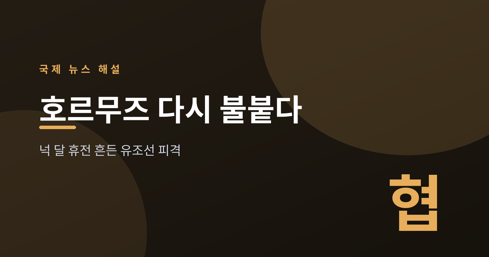
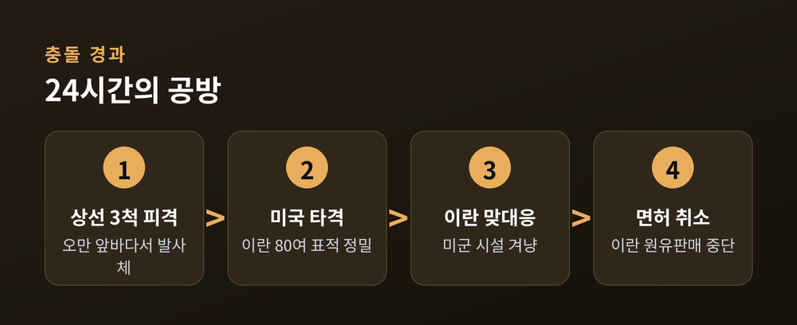
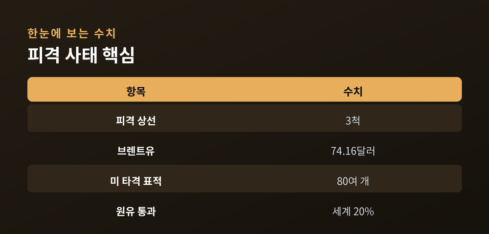
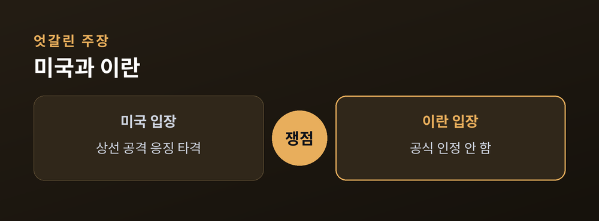

넉 달 휴전 흔든 유조선 피격

2026년 4월 미국과 이란은 넉 달 가까이 이어진 전쟁을 멈추는 휴전에 합의했다. 그러나 7월 7일 호르무즈 해협에서 상선 3척이 잇따라 피격되며 봉합됐던 갈등이 다시 터졌다. 전 세계 원유의 약 20%가 지나는 길목이 흔들리자 국제사회는 촉각을 곤두세우고 있다.
7월 7일 오만 앞바다 호르무즈 해협 인근에서 사우디 유조선과 카타르 LNG 운반선을 포함한 상선 3척이 발사체에 맞았다. 여러 외신은 인명 피해는 없었으나 일부 선박에 큰 손상이 발생했다고 전했다. 이란 국영방송은 익명 소식통을 인용해 "경로 경고를 무시한 선박"이라는 취지로 보도했으나, 이란 당국은 공식적으로 공격을 인정하지 않았다.
미국 중부사령부(CENTCOM)는 곧바로 "민간인이 탑승한 상선을 공격한 대가를 치르게 하겠다"며 이란 내 80여 개 표적에 정밀 타격을 개시했다고 밝혔다. 이란 측은 바레인·쿠웨이트의 미군 시설 다수를 겨냥했다고 맞받았다.

호르무즈 해협은 전 세계 해상 원유 물동량의 약 5분의 1이 통과하는 지점이다. 피격 소식에 국제 유가는 즉각 반응했다. 브렌트유는 3% 오른 배럴당 74.16달러로 마감했고, 시간외 거래에서는 76달러 선까지 뛰었다. 미국은 이란산 원유 판매를 허용했던 면허를 즉시 취소하며 압박에 나섰다.

문제는 이 사건이 6월 서명된 양해각서(MOU)의 이행 초기에 발생했다는 점이다. 양측은 항행의 자유, 핵·미사일, 제재 완화를 60일간 논의하기로 했으나, 이번 충돌로 신뢰가 흔들렸다.

안토니우 구테흐스 유엔 사무총장은 24시간 새 오간 공방을 "우려스럽다"고 평가하며 4월 이후 진전된 외교 성과가 무너질 위험을 경고했다. 다만 양측 모두 전면전 복귀를 원하지 않는 기류도 감지된다. 실무급 기술 협의는 이어지고 있으나 고위급 회담은 잡히지 않은 상태다.
해협 물동량은 휴전 이후 조금씩 회복됐으나 전쟁 이전 수준에는 크게 못 미친다. 현지 국영 석유사는 완전한 정상화 시점을 빨라도 2027년으로 내다본다. 이번 사건이 단발성 충돌에 그칠지, 재봉합이 어려운 균열로 번질지가 향후 몇 주의 관건이다.
한 척의 유조선이 멈추면 세계 경제의 혈관 하나가 조여든다. 넉 달의 휴전이 얼마나 얇은 종이 위에 서 있었는지가 드러났다. 다음 항로는 대화가 될까, 다시 발사체가 될까.
참고 출처: NPR, Bloomberg, Al Jazeera, UN News